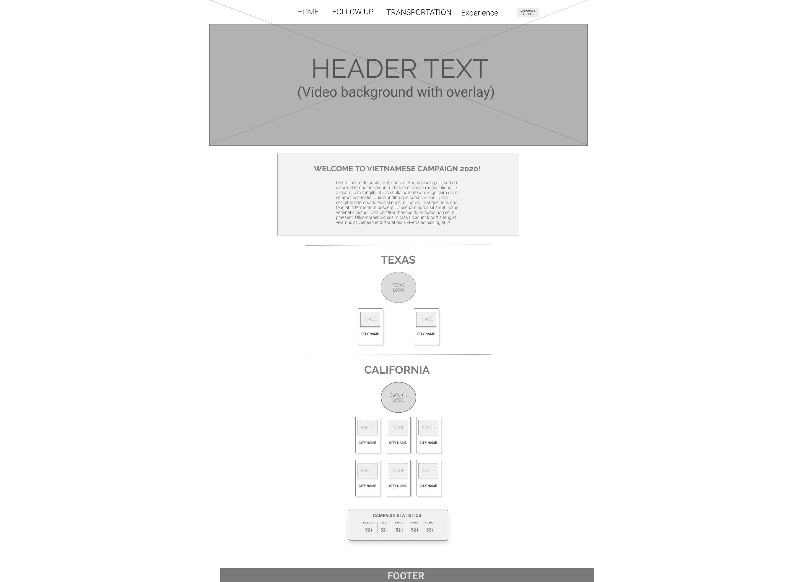
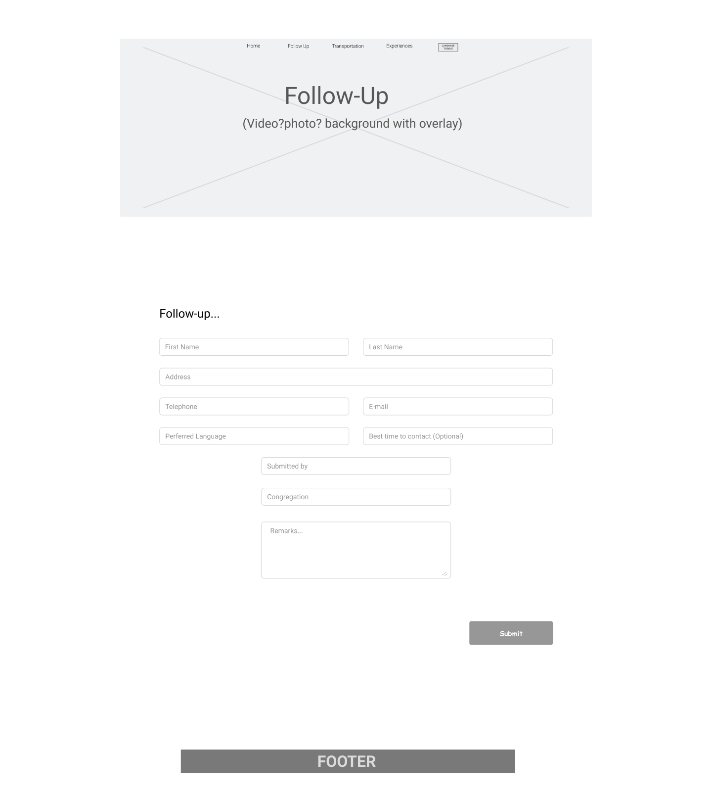
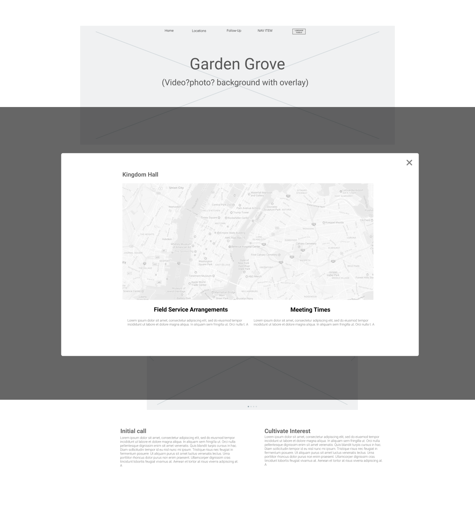
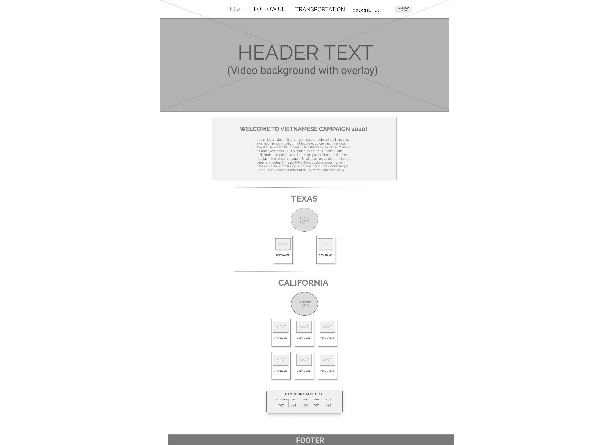
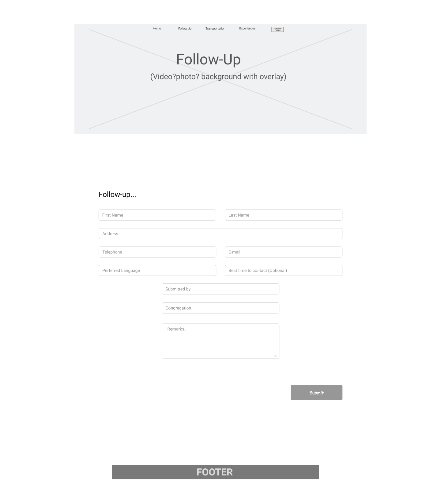
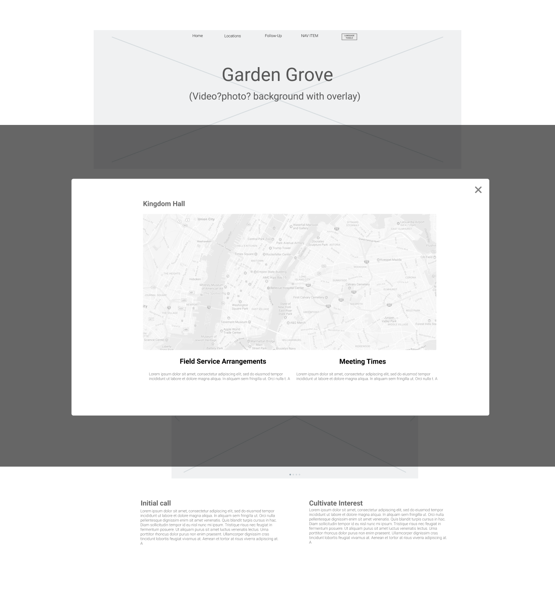

Information Archiecture
User Stories and Flows
With previous research in mind, creating User stories eases the start for designing paths for adding content such as, submitting follow-up forms, clicking to read about your location, practicing your presentations.
As a new user
I want to know the purpose of campaign
As a new user
I want to read about my city
As a new user
I want to find my kingdom hall location and times
As a new user
I want to see videos and pictures
As a new user
I want to learn presentations
As all users
I want to submit transportation forms
As all users
I want to sumbit follow-up forms
As all users
I want to submit my experiences
As all users
I want to replay presentation vidoes
As all users
I want to read the script of the presentation videos
As all users
I want to see webiste in english and vietnamese
As all users
I want to campaign statistics
As all users
I want to read about updating information
User Testing
When undergoing functionality testing of the low-fi prototype, testing the flow of the site. Feedback collected from testers showed no problems navigating the site. However there were a few modifications to be made.
-Add functionality to all buttons
-Input videos for homepage and pictures for about city page
-Follow-up and Experience tabs takes you to google forms, instead of seperate page
-Instead of buttons for locations and times, already have it showing on the page
-Make icons larger and clearer to read on mobile devices
After going through feedback collected from testing and a few iterations later, here is what it looks like. The goal was always keeping a simple homepage that was easily navigatable for people of all ages. Presenting information in a way for users to easily learn on the go.
Preference Testing
To confirm and lock in my design decisions, I took it through a basic A/B test. Making sure the layout is suitable for users.
After testing, the result was users liked the original white/grey background design best.
 Biography
Biography
 Biography
Biography
 




